UD5: PORTFOLIO - ACCESO A DATOS Y OBJETOS DEL NAVEGADOR¶
Duración de la unidad: 17 sesiones.
Aunque esta unidad no se va a desarrollar durante el curso 2025/2026, se deja aquí como ejemplo ilustrativo de cómo utilizar mysql con PHP, sin framework.
INTRODUCCIÓN¶
Estamos en la recta final del proyecto del portfolio. A lo largo de las unidades anteriores nos ha surgido la necesidad de ir almacenando diferentes datos de la aplicación, y lo hemos ido solventando temporalmente mediante diferentes archivos, definiendo variables o estructuras JSON.
Esto ha supuesto la ventaja de tener inmediatez en el acceso a los datos, pero ha complicado otros aspectos (referencia entre categorías de proyectos y array de proyectos, almacenamiento del estado login/logout, etc).
En esta unidad vamos a introducir la utilización de la base de datos relacional MySQL en nuestro proyecto, sustituyendo todas las estructuras de datos por sus correspondientes tablas en base de datos. Para ello, vamos a recurrir una vez más a Docker, que nos va a permitir levantar un contenedor de la base de datos MySQL y comunicarlo con nuestra aplicación, mediante PDO.
EVALUACIÓN¶
El presente documento, junto con sus correspondiente boletín de actividades (publicado adicionalmente), cubren los siguientes criterios de evaluación:
| RESULTADOS DE APRENDIZAJE | CRITERIOS DE EVALUACIÓN |
|---|---|
| RA6. Desarrolla aplicaciones de acceso a almacenes de datos, aplicando medidas para mantener la seguridad y la integridad de la información. | a) Se han analizado las tecnologías que permiten el acceso mediante programación a la información disponible en almacenes de datos. b) Se han creado aplicaciones que establezcan conexiones con bases de datos. c) Se ha recuperado información almacenada en bases de datos. d) Se ha publicado en aplicaciones web la información recuperada. e) Se han utilizado conjuntos de datos para almacenar la información. f) Se han creado aplicaciones web que permitan la actualización y la eliminación de información disponible en una base de datos. g) Se han probado y documentado las aplicaciones. |
PREPARACIÓN DEL ENTORNO¶
Antes de realizar ningún cambio en el proyecto, haz una copia de seguridad. Para introducir MySQL en nuestro proyecto hemos de modificar el fichero docker-compose.yml. Primero introducimos un nuevo servicio llamado "mysql" que utilizará la imagen mysql:5.7 (respeta las indentaciones):
mysql:
image: mysql:5.7
container_name: docker-mysql
environment:
MYSQL_DATABASE: portfolio_db
MYSQL_USER: admin
MYSQL_PASSWORD: admin
MYSQL_ROOT_PASSWORD: admin
ports:
- "3306:3306"
restart: always
A través de las directivas "environment" estamos configurando los parámetros que necesitamos en nuestra base de datos. Además, estamos exponiendo el puerto 3306 del contenedor al mismo puerto del host, y con restart:always le estamos indicando a Docker que reinicie el contenedor si en algún momento dejase de ejecutarse.
Además, para hacer nuestra vida más fácil, vamos a utilizar phpMyAdmin para administrar nuestra base de datos de una forma más sencilla. Para ello, introducimos el siguiente servicio en el fichero docker-compose.yml:
phpmyadmin:
image: phpmyadmin/phpmyadmin
ports:
- "8080:80"
restart: always
environment:
PMA_HOST: mysql
depends_on:
- mysql
Hasta aquí todo perfecto. Vamos a levantar los contenedores mediante docker-compose up:
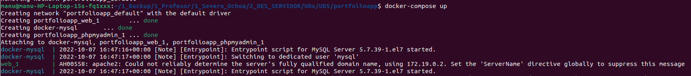
Primero vamos a ver cómo parar estos servicios: lo que venimos haciendo es ctrl+c, para que se detenga la ejecución interactiva, pero ahora, tras hacer ctrl+c vamos a ejecutar otro comando:
docker-compose down
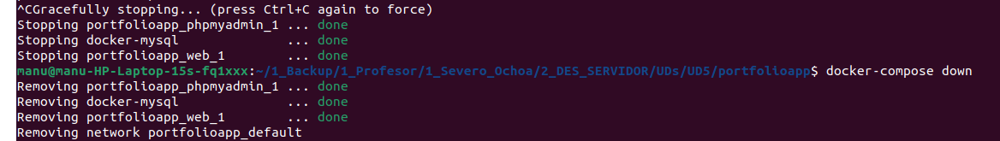
Ésta es la forma correcta de parar los servicios. De esta forma se eliminan los contenedores que se han creado con docker-compose up.
Ahora que ya sabemos levantar y "bajar" los servicios de Docker Compose, vamos a crear nuestra primera tabla con phpMyAdmin. Ejecutamos docker-compose up y vamos a localhost:8080 (o al puerto donde hayamos expuesto este servicio):
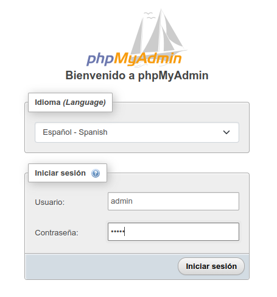
Introducimos las credenciales que hemos configurado en docker-compose.yml (admin/admin), y creamos nuestra primera tabla "categorias":
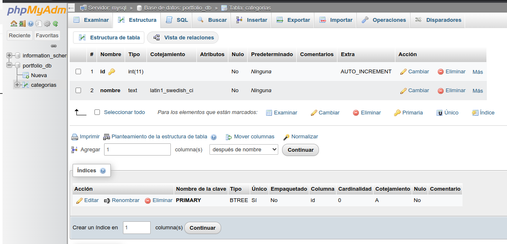
Aparentemente ha ido todo bien, hemos configurado nuestra primera tabla donde definiremos las categorías de nuestros proyectos.
Salimos del panel de administración, y paramos los contenedores con docker-compose down.
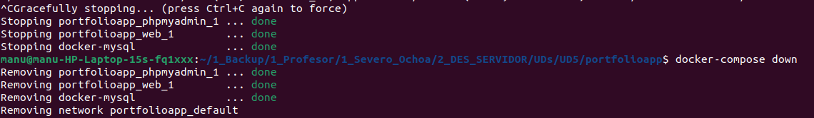
Ahora queremos volver a entrar y definir algunos registros para nuestra nueva tabla, queremos empezar a conectar nuestro código PHP con nuestra nueva base de datos. Para ello, levantamos los servicios con docker-compose up, y accedemos a phpMyAdmin:
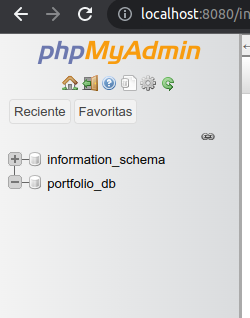
Buscamos la tabla de categorías, sin éxito. ¿Qué ha ocurrido? ¿Cómo es posible si en la captura de la página anterior vemos que sí hemos creado esta tabla?
No, no lo hemos soñado. Algo ha pasado, y tiene que ver con la misma naturaleza de los contendores. Los contenedores tienen naturaleza efímera. Esto quiere decir que lo podemos llegar a destruir/reemplazar en cualquier momento, y nuestra aplicación no debería verse afectada por ello.
¿Pero qué ha pasado realmente para haber eliminado la configuración de nuestra tabla? Al configurar la nueva tabla, esta información se ha guardado dentro del contenedor de MySQL, pero al ejecutar docker-compose down, se ha eliminado el contenedor, y con él toda la información que habíamos generado.
Entonces, la siguiente pregunta lógica sería: ¿existe alguna forma de poder retener la información del contenedor, aunque el contenedor desaparezca? La respuesta es: sí, mediante lo que llamamos volúmenes de Docker. En realidad ya hemos utilizado un volumen anteriormente, para poder establecer una relación entre nuestra carpeta src, y la ruta /var/www/html del contenedor. Este tipo de volumen en Docker se trataría de directorios enlazados.
Para MySQL vamos a utilizar un volumen nombrado, que implica que se cree un objeto Docker nuevo, de tipo volumen, sobre el que se pueden realizar operaciones adicionales (ver el manual de Docker básico para más detalles). Éste suele ser el tipo de volumen utilizado para respaldar los datos de un contenedor de base de datos. Con todo ello, modificamos el docker-compose.yml para acomodar los cambios:
mysql:
image: mysql:5.7
container_name: docker-mysql
environment:
MYSQL_DATABASE: portfolio_db
MYSQL_USER: admin
MYSQL_PASSWORD: admin
MYSQL_ROOT_PASSWORD: admin
ports:
- "3306:3306"
restart: always
volumes:
- dbdata:/var/lib/mysql
volumes:
dbdata:
Vamos a levantar los servicios. Podemos ver en la consola que se ha creado el volumen dbdata:
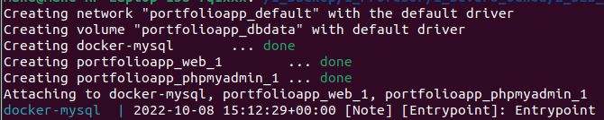
Una vez levantados, abrimos otra terminal e introducimos:
docker volume ls
Vamos a realizar los siguientes pasos:
- Volvemos a phpMyAdmin, definimos la tabla de categorías de nuevo.
- Ejecutamos docker-compose down.
- Ejecutamos docker-compose up.
- Entramos de nuevo a phpMyAdmin, y comprobamos que la tabla no se ha borrado esta vez.
Ya parece que lo tenemos todo. Vamos a organizar todo lo concerniente a la base de datos en una nueva carpeta llamada mysql. En primer lugar creamos el fichero db_credenciales.php con el siguiente contenido:
<?php
$servername = "mysql:3306";
$username = "admin";
$password = "admin";
$db = "portfolio_db";
?>
Ahora vamos a modificar index.php, que va a quedar con el siguiente contenido (inicial):
<?php include("templates/header.php"); ?>
<?php include("mysql/db_credenciales.php"); ?>
<?php
try {
$conn = new PDO("mysql:host=$servername;dbname=$db", $username, $password);
$conn->setAttribute(PDO::ATTR_ERRMODE, PDO::ERRMODE_EXCEPTION);
echo "Conexión exitosa";
} catch(PDOException $e) {
echo "La conexión ha fallado: " . $e->getMessage();
}
?>
<div class="container mb-5">
<div class="row">
</div>
</div>
<?php include("templates/footer.php"); ?>
La explicación de esta conexión a la base de datos, la encontramos en este enlace (ejemplo PDO).
Al visitar la página principal del portfolio, vemos el siguiente error:
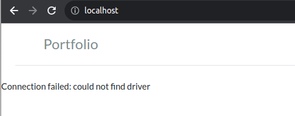
La prueba no ha funcionado. El error nos avisa de que no se encuentra el driver a MySQL. ¿Cómo es posible esto? La imagen que estamos utilizando "php:7.4-apache", ¿no contiene ya todo lo necesario? Aparentemente no. Necesitamos que nuestro contenedor tenga habilitada la extensión PDO de PHP, como por ejemplo se contempla en esta consulta. Pero, ¿cómo vamos a llevar a cabo esto en el contenedor si hemos dicho que tiene carácter efímero y en cualquier momento se puede perder cualquier cambio que hagamos?
Esto tiene fácil solución en el mundo Docker: solo hemos de crear una nueva imagen a partir de la imagen "php:7.4-apache". Pero, ¿cómo? a través de lo que se llama Dockerfile.
Un fichero Dockerfile define una imagen, lo que quiere decir que contiene las instrucciones para construir (en inglés build) un contenedor. Una imagen se puede construir a partir de otra imagen, vamos a hacerlo. Crea un fichero llamado Dockerfile a la altura de docker-compose.yml, con el siguiente contenido:
FROM php:7.4-apache
RUN docker-php-ext-install pdo pdo_mysql
web:
#image: php:7.4-apache
build: .
ports:
- "80:80"
volumes:
- ./src:/var/www/html
Hacemos docker-compose down, y después "docker-compose up --build" (con el parámetro build se reconstruye la imagen), y vemos que se ejecuta la nueva instrucción que habilita la extensión PDO:
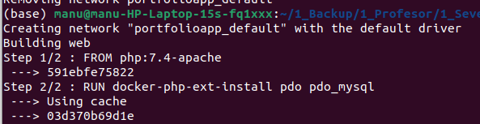
Vamos a volver a probar la aplicación:
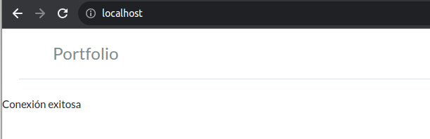
Ya funciona el acceso a la base de datos, podemos empezar a utilizarla en nuestra aplicación. Por el camino hemos aprendido muchas cosas sobre Docker:
- Volúmenes nombrados y persistencia de datos.
- DNS entre los contenedores Docker.
- Dependencias entre contenedores, y reiniciado.
- Configuración de un Docker file.
Plantéate estas últimas cuestiones:
- Los servicios "web" y "phpmyadmin" necesitan comunicarse con mysql, pero: ¿el servicio web necesita comunicarse con phpmyadmin para realizar su función, o viceversa? La respuesta es que no. Por tanto, deberíamos cortar la comunicación entre ellos para aislarlos entre sí y evitar cualquier problema de seguridad. Esto, en Docker, se consigue mediante la definición de redes entre los propios servicios.
- Estamos utilizando un mismo contenedor basado en la imagen php:7.4-apache, que contiene PHP 7.4 y Apache. ¿No sería más conveniente separar estos dos componentes en diferentes contenedores? ¿qué ventajas obtendríamos a cambio?
ACCESO A DATOS¶
Teoría¶
Para la implementación del acceso a datos de nuestro proyecto de portfolio nos vamos a basar en la sección MySQL Database del manual de PHP de W3CSchools. En concreto, vamos a utilizar PDO (PHP Data Objects), que es la opción más utilizada actualmente, y que utiliza orientación a objetos. Las diferentes opciones para gestionar el acceso a una base de datos desde PHP se discuten en este enlace.
Para tener una referencia de la sintaxis básica de orientación a objetos en PHP, puedes basarte en este enlace, aunque no profundizaremos en tanto detalle.
Proyecto¶
En esta última fase del proyecto vamos a centralizar todos nuestros datos en una base de datos y alimentar nuestra aplicación con las tablas y operaciones correspondientes. Para ello, primero vamos a definir las tablas que necesitamos en nuestra base de datos, las relaciones entre ellas, para pasar a continuación a manejar los proyectos de la aplicación haciendo uso de la base de datos.
Diseño de base de datos¶
Ésta es una propuesta de las tablas que podríamos necesitar, según los datos que hemos venido manejando hasta ahora:
| Entidad | Campos |
|---|---|
| usuario | id: clave primaria, requerido e-mail: tipo texto, requerido, valor único password: texto, requerido Nombre y apellidos: texto, requerido DNI: texto, requerido, según expresión regular Activo: booleano, verdadero por defecto Admin: booleano, falso por defecto |
| sesion | id: clave primaria, requerido usuario: identificador de usuario, valor único Claves foráneas: Usuario |
| proyecto | id: clave primaria, requerido Título: texto, requerido, valor único Fecha: tipo fecha, requerido Descripción: texto, requerido Imagen: texto, opcional Claves foráneas: No tiene |
| categoria | id: clave primaria, requerido Nombre: texto, requerido Claves foráneas: No tiene |
| categoria_proyecto | id: clave primaria, requerido Proyecto: identificador, requerido Categoría: identificador, requerido Claves foráneas: Proyecto, Categoría |
| contacto | id: clave primaria, requerido Nombre y apellidos: texto, requerido e-mail: tipo e-mail, requerido Teléfono: formato teléfono, requerido Particular/empresa: texto, requerido Mensaje: texto, requerido Archivo: texto, opcional Claves foráneas: No tiene |
ACTIVIDAD: analizamos y diseñamos las tablas en la BBDD, en clase. Es necesario guardar todos los scripts de creación e inserción, por si necesitásemos re-crear la BBDD en otro entorno.
Listado de proyectos¶
Antes que nada, vamos a pensar cuál es la mejor forma de estructurar el código que vamos a generar cuando interactuemos con la base de datos.
Para ello, vamos a definir un fichero PHP dentro de la carpeta mysql, por cada una de las tablas sobre la que necesitemos realizar operaciones. Por ejemplo, para la tabla proyectos, el nombre del fichero será "proyecto_sql.php", y dentro definiremos tantas variables como sentencias preparadas necesitemos.
Será conveniente seguir una nomenclatura para no confundirnos con las variables. Por ejempo:
- Una variable que recupere todos los proyectos la podríamos llamar $proyecto_select_all
- Otra variable que nos sirva para recuperar un determinado proyecto la podríamos llamar \$proyecto_detail
- Para actualizar un proyecto podríamos utilizar \$proyecto_update.
Y así sucesivamente, para poder identificar cada operación con una variable.
Iremos añadiendo estas variables conforme las vayamos a necesitar.
En este ejemplo guiado vamos a implementar una versión simplificada del listado de proyectos Dicho esto, vamos a crear un fichero de consultas para la tabla de proyectos, con el siguiente contenido:
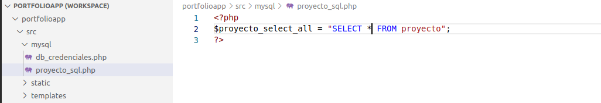
El archivo db_credenciales.php, ya lo hemos creado con anterioridad.
Creamos la tabla en la base de datos:
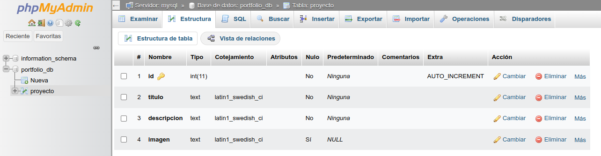
Y creamos algunos ejemplos manualmente:
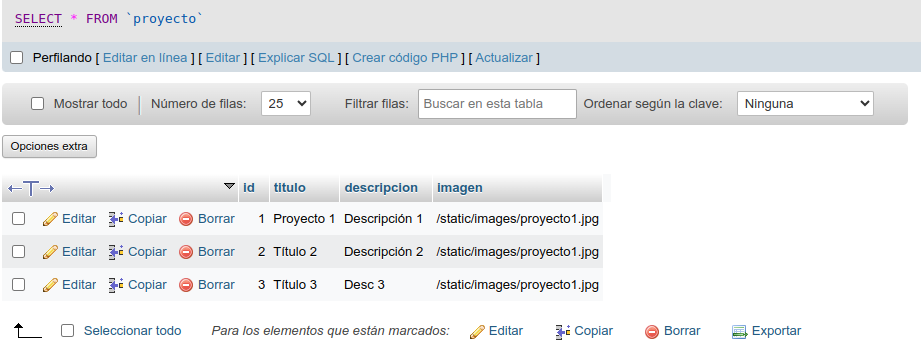
Hacemos una copia de la base de datos, por si hemos de exportar el proyecto a otro entorno.
Antes de empezar a modificar el código de la aplicación, recuerda hacer una copia de seguridad de la versión anterior. Tras algunas modificaciones, el código básico de index.php queda del siguiente modo:
<?php include("templates/header.php"); ?>
<?php include("mysql/db_credenciales.php"); ?>
<?php include("mysql/proyecto_sql.php"); ?>
<?php
try {
$conn = new PDO("mysql:host=$servername;dbname=$db", $username, $password);
$conn->setAttribute(PDO::ATTR_ERRMODE, PDO::ERRMODE_EXCEPTION);
} catch(PDOException $e) {
echo "La conexión ha fallado: " . $e->getMessage();
}
$consulta = $conn->prepare($proyecto_select_all);
$resultado = $consulta->setFetchMode(PDO::FETCH_ASSOC);
$consulta->execute();
$proyectos = $consulta->fetchAll();
?>
<div class="container mb-5">
<div class="row">
<?php foreach($proyectos as $proyecto): ?>
<div class="col-sm-3">
<a href="#" class="p-5">
<div class="card">
<img class="card-img-top" src="<?php echo $proyecto['imagen']?>" alt="<?php echo utf8_encode($proyecto['titulo'])?>">
<div class="card-body">
<h5 class="card-title"><?php echo utf8_encode($proyecto['titulo']) ?></h5>
<p class="card-text"><?php echo utf8_encode($proyecto['descripcion'])?></p>
</div>
</div>
</a>
</div>
<?php endforeach; ?>
</div>
</div>
<?php include("templates/footer.php"); ?>
<?php $conn = null; ?>
La explicación de las líneas cambiados la encontramos en este enlace, donde se detalla todo lo referente a la recuperación de registros con PDO. Lo revisamos en clase, y revisamos también el propósito del método setFetchMode.
Al asignar valores al array de proyectos, utilizamos el método fetchAll del objeto almacenado en $consulta. Podríamos operar directamente con el objeto consulta si utilizásemos su método fetch, pero tendríamos que envolverlo en un bucle para poder recorrer todos los registros. Los distintos ejemplos del enlace anterior utilizan fetch o fetchAll dependiendo de si necesitamos almacenar los registros en un array intermedio, o los imprimimos directamente por pantalla.
FÍJATE que, al terminar el acceso a la BBDD, cerramos la conexión igualando la variable \$conn a null.
Listado de categorías por proyecto¶
En las actividades de unidades anteriores hemos categorizado nuestros proyectos y hemos ido visualizando en las distintas partes de la aplicación las categorías de cada uno de ellos. En particular en: el listado de proyectos de la página principal, y en la ficha del propio proyecto.
En este apartado vamos a sustituir la lectura que hacíamos de datos.php donde se encontraban los datos, por la lectura en la base de datos, desde index.php.
Para ello, primero nos aseguramos que tenemos creadas las tablas "categoria" y "categoria_proyecto":
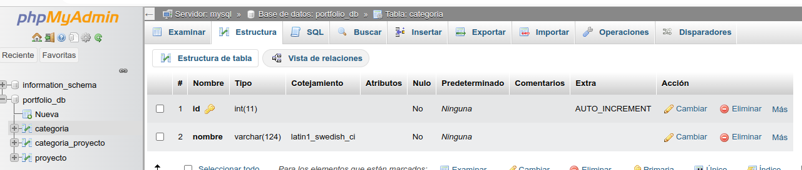
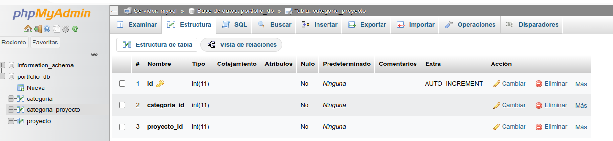
Y les damos valores de prueba a las dos tablas:
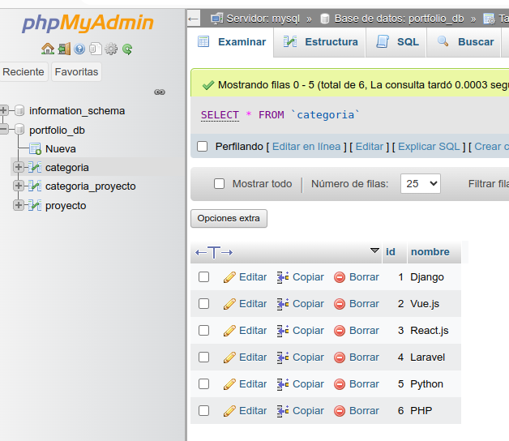
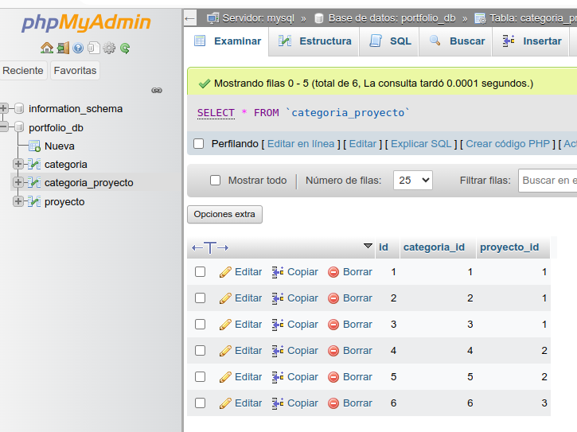
Ya hemos cubierto una parte. Ahora vamos a pasar a implementar el código que nos devuelva un array con todas las categorías asociadas a un determinado proyecto. Para ello, necesitamos implementar una lógica que, a partir del identificador del proyecto, nos devuelva un array con todos los nombres de sus categorías, pero aún no sabemos parametrizar las consultas a la BBDD.
¿Cómo podemos hacer para añadir una cláusula WHERE a una SQL en función del valor de una variable? Para ello, PHP nos proporciona el uso de las sentencias preparadas. Revisamos este enlace, y vemos que se trata de unir (bind, en inglés) una parte de la sentencia SQL con una o más variables, mediante el signo de interrogación.
Bien, vamos a empezar a utilizar las sentencias preparadas en nuestro código. Pero queremos hacerlo de forma modular, para reaprovechar código y que su lectura sea más clara. Damos los siguientes pasos:
- Creamos un nuevo fichero categoria_sql.php, donde vamos a registrar todas las sentencias SQL y la interacción con la BBDD:
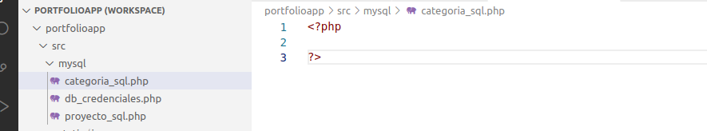
-
Dentro de este fichero, creamos una variable que contendrá la sentencia preparada, quedando de la forma:
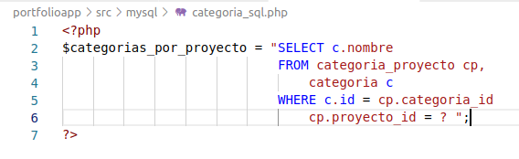
-
Ahora podríamos utilizar esta variable desde index.php, como hicimos para los proyectos (desde index.php), pero podemos reaprovechar más código creando una función donde se ejecuten los métodos prepare, bind, execute, y dejar solo la llamada a esta función desde index.php. Por tanto, insertamos la función get_categorias_por_proyecto en categoria_sql.php, quedando así:
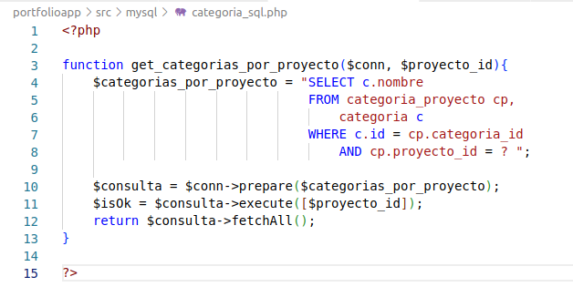
En esta lógica no hemos utilizado el método bind porque PHP toma el orden en el array que se le pasa a execute, para sustituir los interrogantes de la sentencia SQL. Si, por alguna razón, queremos un código más legible y ordenado, podemos realizar los siguientes cambios:
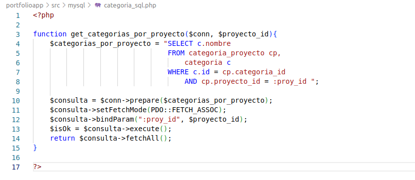
- Ahora solo hemos de modificar index.php y añadir un bucle anidado que imprima las categorías de cada proyecto como enlaces (veremos el por qué en las actividades), quedando del siguiente modo:
<?php include("templates/header.php"); ?>
<?php include("mysql/db_credenciales.php"); ?>
<?php include("mysql/proyecto_sql.php"); ?>
<?php include("mysql/categoria_sql.php"); ?>
<?php
try {
$conn = new PDO("mysql:host=$servername;dbname=$db", $username, $password);
$conn->setAttribute(PDO::ATTR_ERRMODE, PDO::ERRMODE_EXCEPTION);
} catch(PDOException $e) {
echo "La conexión ha fallado: " . $e->getMessage();
}
$consulta = $conn->prepare($proyecto_select_all);
$resultado = $consulta->setFetchMode(PDO::FETCH_ASSOC);
$consulta->execute();
$proyectos = $consulta->fetchAll();
?>
<div class="container mb-5">
<div class="row">
<?php foreach($proyectos as $proyecto): ?>
<div class="col-sm-3">
<a href="#" class="p-5">
<div class="card">
<img class="card-img-top" src="<?php echo $proyecto['imagen']?>" alt="<?php echo utf8_encode($proyecto['titulo'])?>">
<div class="card-body">
<h5 class="card-title"><?php echo utf8_encode($proyecto['titulo']) ?></h5>
<p class="card-text"><?php echo utf8_encode($proyecto['descripcion'])?></p>
</div>
</div>
</a>
<?php foreach(get_categorias_por_proyecto($conn, $proyecto['id']) as $categoria): ?>
<a href="#" class="badge bg-secondary"><?php echo utf8_encode($categoria['nombre']) ?></a>
<?php endforeach; ?>
</div>
<?php endforeach; ?>
</div>
</div>
<?php include("templates/footer.php"); ?>
<?php $conn = null; ?>
Nuestra página principal queda del siguiente modo:
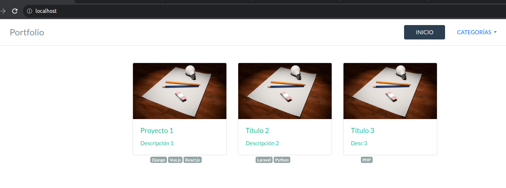
ACTIVIDAD DE CLASE: refactorizamos proyecto_sql.php e index.php para hacer lo mismo que hemos hecho con las categorías.
En este apartado anterior nos queda un pequeño detalle, y es el paso previo a poder navegar, desde index.php a la ficha del proyecto. Se trata del atributo href de index.php. Vamos a cambiarlo para pasar por parámetro el id del proyecto a proyecto.php, de la forma:
<a href="proyecto.php?id=<?php echo $proyecto['id']?>" class="p-5">
Ficha de proyecto¶
Una vez tenemos listo index.php y hemos configurado correctamente los enlaces a la ficha del proyecto. Ahora hemos de acomodar proyecto.php a la nueva fuente de datos, y tomar el parámetro id de la URL para recuperar los datos del proyecto consultado. El código es el siguiente:
proyecto_sql.php
Añadimos la siguiente función, que recupera los datos de un proyecto, y además comprueba que se recupera exactamente un solo registro, y si no es así se lanza una excepción:
function get_proyecto_detail($conn, $proyecto_id){
$proyecto_select_detail = "SELECT * FROM proyecto WHERE id = :proy_id";
$consulta = $conn->prepare($proyecto_select_detail);
$consulta->setFetchMode(PDO::FETCH_ASSOC);
$consulta->bindParam(":proy_id", $proyecto_id);
$isOk = $consulta->execute();
if ($consulta -> rowCount() == 0){
trigger_error("No se ha encontrado el ID de proyecto");
}
if ($consulta -> rowCount() > 1){
trigger_error("Se ha recuperado más de un registro");
}
return $consulta->fetch();
}
Si la clave primaria está bien configurada en la BBDD, no sería necesaria la segunda comprobación porque la SQL filtra por ID, aunque se ha incluido a modo ilustrativo.
Los mensajes de error que se lanzan no son amigables, sería más correcto mostrar mensajes de error significativos para el usuario, en forma de alertas y/o redireccionando a otra página.
Cabe hacer notar que aquí hemos utilizado fetch para volcar un solo registro, habiendo antes comprobado que solo se ha recuperado uno de la BBDD.
NUNCA NUNCA NUNCA utilices LIMIT 1 en una sentencia SQL, si se supone que la consulta solo te ha de devolver un registro. Utilizar LIMIT 1 cuando la consulta ha de recuperar solo 1 registro puede enmascarar errores en el código que, muchas veces, son difíciles de depurar. Mejor siempre comprueba cuántos registros ha devuelto la consulta, y trata cualquier error desde el punto de vista de usabilidad.
LIMIT 1 deberías utilizarlo SOLO cuando quieras el primero de los posibles registros en una consulta en la que sepas de antemano que puede devolver múltiples registros.
proyecto.php
<?php
$proyecto_id = $_GET['id'];
if (is_null($proyecto_id)){
header("Location: index.php");
exit();
}
include("templates/header.php");
include("mysql/db_credenciales.php");
include("mysql/proyecto_sql.php");
include("mysql/categoria_sql.php");
try {
$conn = new PDO("mysql:host=$servername;dbname=$db", $username, $password);
$conn->setAttribute(PDO::ATTR_ERRMODE, PDO::ERRMODE_EXCEPTION);
} catch(PDOException $e) {
echo "La conexión ha fallado: " . $e->getMessage();
}
$proyecto = get_proyecto_detail($conn, $proyecto_id);
?>
<div class="container">
<h2><?php echo utf8_encode($proyecto['titulo']) ?></h2>
<span>Categorías: </span>
<?php foreach(get_categorias_por_proyecto($conn, $proyecto['id']) as $categoria): ?>
<a href="#" class="badge bg-secondary"><?php echo utf8_encode($categoria['nombre'])?></a>
<?php endforeach; ?>
<br> <br>
<div class="row">
<div class="col-sm">
<img src="<?php echo $proyecto['imagen'] ?>" alt="<?php echo utf8_encode($proyecto['titulo']) ?>" class="img-fluid rounded">
<br>
</div>
<div class="col-sm">
<?php echo utf8_encode($proyecto['descripcion']) ?>
</div>
</div>
</div>
<?php include("templates/footer.php"); ?>
<?php $conn = null; ?>
Empezamos por recuperar el parámetro, cosa que ya sabemos hacer por la UD3. Si no existe parámetro en la URL (manipulación del usuario), deberíamos mostrar un mensaje de error, o redireccionar hacia otra página. En este caso se ha redireccionado a index.php. Se utiliza para ello el método header, que ha de invocarse antes de que se cargue ningún otro elemento de la página, por eso ponemos los include después.
En las actividades de esta unidad acabaremos de completar el proyecto de portfolio.
Revisión del ejemplo guiado¶
El criterio de evaluación R6.a) se dará por superado al hacer el ejercicio guiado. Como actividad, se revisará en clase el trabajo realizado durante las sesiones del presente documento.